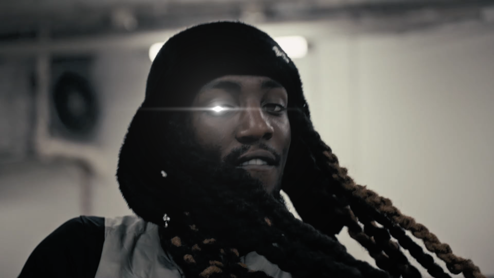
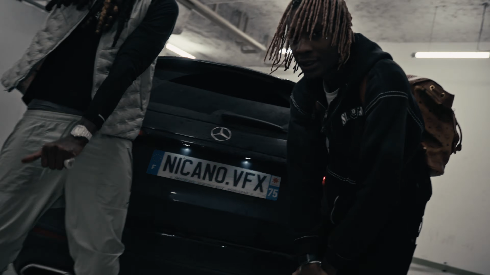
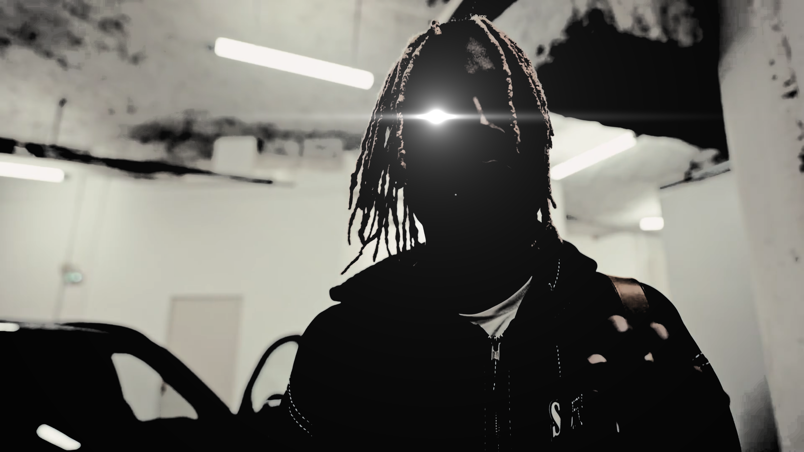

Je m'appelle Enzo Quinones, je monte des vidéos depuis 2020 et je suis actuellement en première année en école de montage vidéo/VFX chez MJM Graphic Design.
Sous le pseudo @lil.nzo, j’ai développé un compte à plus de 600K abonnés principalement aux États-Unis, générant plus de 100 millions de vues (cédé à un proche depuis janvier 2026).
Ainsi, des templates CapCut crées par mes soins ont été utilisés par des créateurs et artistes comme NLE Choppa ↗. J'ai pu travailler au sein de programmes comme CapCut Pioneer et Filmora.
Aujourd’hui, je me concentre sur les VFX pour des clips musicaux (principalement rap). J'ai aussi la chance d'etre editeur et artiste VFX pour le collectif STARBASS ↗



Email : enzo.quinones00@email.com
Téléphone : 06 58 94 80 11